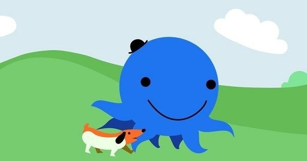

Oswald who?
Oswald is a safety-conscious but fun-loving octopus who lives in an apartment complex in Big City with his dog, Weenie. His neighborhood is peopled with colorful characters like his pal, Henry the Penguin, Madame Butterfly, who runs the Big Diner, and her daughter, Catrina Caterpillar. Oswald likes to play the piano and sing, and he always does whatever he can to help his friends and neighbors.
He'd a doggo~ Weenie
Weenie (voiced by Debi Derryberry) – Weenie is Oswald's pet dachshund. Weenie bears a strong resemblance to a hot dog and only communicates in "bark-speak".

Plot?
The series is set in Big City, a colorful world populated by anthropomorphic animals, mythological creatures and humanoid beings. Each episode follows the daily experiences of a blue octopus named Oswald (voiced by Fred Savage), accompanied by his beloved pet hot dog Weenie, and their life in the cheerful and whimsically-designed community of Big City. Commonly, the program concentrates on Oswald's experiences with friends, acquaintances and neighbors, including Henry, a penguin, and Daisy, a flower, among others – and his patient methods of coping with or tolerating different situations and dilemmas, along with his thoroughly optimistic outlook on life.